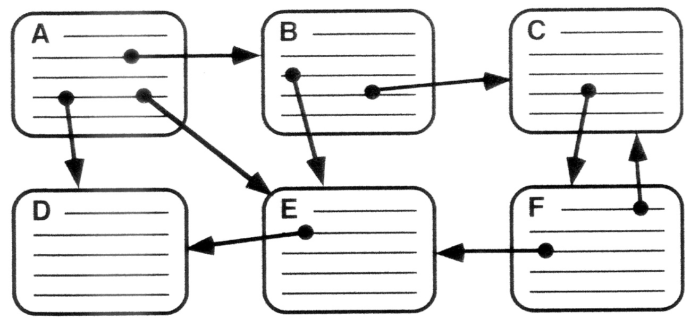

The Web
The Internet
HTML / CSS
Inter.net Classes
Learn everything you need to know about the Internet
What is the Web?

The Web is an abstract (imaginary) space of information. It is a subset of the Internet (i.e. it runs over the Internet). It is a system of interlinked hypertext documents accessed via the Internet , Web Browsers , hyperlinks.
What is Hypertext / Hyperlink?
Hypertext is any text displayed on a computer display or other electronic devices with references (hyperlinks) to other text that the reader can immediately access. Hyperlink, or simply a link, is a reference to data that the reader can directly follow either by clicking or tapping. A hyperlink points to a whole document or a specific element within a document.
The three concerns of a web document
- Content - the information covneyed by a page
- Meaningful structure (section headings, paragraphs, emphasis etc.) and subject matter.
- Presentation - the appearance of a page
- Typefaces.
- Layout.
- Colour schemes & graphics.
- Eye-candy.
-
Behaviour - interactive or responsive functionality
- Respond to user input.
- Manage external data manipulation.
- Handling browser inconsistencies / requirements.
- More eye-candy.
What is a Web Client?
The client, or user, side of the Web . It typically refers to Web browsers in the user's machine which is software that creates and sends HTTP requests and handles the responses.

What is a Web Server?
A Web server is a software that uses the HTTP protocol to deliver the files that form Web pages to Web browsers, in response to the user's requests. Dedicated computers may be referred to as Web servers, but they can run multiple servers. If the Web Server is used internally and is not exposed to the public, it is an " Intranet server".
What is Intranet?
An inhouse website / private network accessible only to an organization's staff. An Intranet also uses TCP/IP , HTTP , and other Internet protocols and in general looks like a private version of the Internet. With tunneling , companies can send private messages through the public network, using special encryption/decryption and other security safeguards. Typically, larger enterprises allow users within their Intranet to access the public Internet through firewall servers that have the ability to screen messages in both directions so that company security is maintained.
What is Tunneling or Port forwarding?
Tunneling, also known as "port forwarding", is the transmission of data intended for use only within a private, usually corporate network through a public network in such a way that the routing nodes in the public network are unaware that the transmission is part of a private network.
What is a Network Node?
In a communications network, a network node is a connection point that can receive, create, store or send data along network routes. Each network node - whether it's an end point for data transmissions or a redistribution point - has a capability to recognize, process and forward transmissions to other nodes.
What is the Internet?
The Internet is a networking infrastructure that allows computers from around the world to connect to each other via routers and servers. When two computers are connected over the Internet, they can send and receive information. The Internet is based on common standards - notably the TCP/IP protocol.
What is a Network Protocol?

A Network Protocol is a set of established rules that dictates how to format, transmit and receive data. Modern protocols for computer networking all generally use packet switching techniques to send and receive messages in the form of packets - messages subdivided into pieces that are collected and reassembled at their destination.
Common Internet Protocols
| Protocol | Abbreviation | Use |
|---|---|---|
| HTTP | HyperText Transfer Protocol | Core protocol for Web transactions |
| SSL | Secure Socket Layer | Data encryption |
| HTTPS | Secure HTTP | Combination of HTTP and SSL |
| SMTP POP IMAP |
Simple Mail Transfer Protocol
Post Office Protocol Onternet Message Access Protocol |
Used in combination to provide most email services |
| FTP | File Transfer Protocol | Used to exchange files between computers |
| SSH and SFTP | Secure SHell and Secure(SSH FTP) | Encreypted access to remote computers plus extension for encrypted file transfer |
| BitTorrent | BitTorrent | Protocol for peer-to-peer data access and exchange |
TCP/IP (Transmission Control Protocol)
Transmission Control Protocol (TCP) and Internet Protocol (IP) are two distinct computer network protocols.
TCP and IP are
so commonly used together, however, that TCP/IP has become standard terminology for referring to this suite
of protocols.
(Source)
They handle the delivery of packets to/from any device
with an IP address - a unique numeric
identified for a device on the internet e.g. 128.249.233.249
What is a Packet?
A packet is the unit of data that is routed between a sender and a receiver on the internet via any other packet-switched network. When any file is sent from one place to another on the internet, the TCP layer of TCP/IP divides the file into "chunks" of an efficient size for routing. Each of these packets is separately numbered and includes the Internet address (IP) of the destination. The individual packets for a given file may travel different routes through the Internet. When they have all arrived, they are reassembled into the original file by the TCP layer at the receiving end.
Packets have two parts:
- The Header (addressing / sequencing information and metadata).
- The Body (actual data payload).
IP: Routing Packets
IP routes packets using address info in the header to direct them to their destination. IP routing is connectionless.
- Does not require a fixed connection between endpoints.
- Enables data to travel via multiple routes to reach the endpoint.
- Packets can be re-routed around points of failure.
A very common analogy

Imagine a written message sent as a series of separate, sequenced postcards.
- Sequence is set by the sender, each card is addressed to the same recipient and posted.
- Cards take their own slighltly different route through the postal system and are delivered to the recipient.
- The recipient assembles cards and acts accordingly.
- Put in order and read message?
- Contact sender and ask for missing cards?
- Stop waiting and ignore future deliveries?
- Ask sender to stop sending cards?
Domain Names
Domain names make the Internet easier (for humans) to use by mapping numeric IP addresses to text-based names e.g. 128.240.233.249 < = > www.netskills.ac.uk
When a device makes a request using a domain name it is resolved back into a numeric IP address by a DNS server.
- There are thousands of DNS servers across the Internet.
- Your device/ISP will primarily point to one.
What is a DNS?
A DNS server is a crucial part of the DNS (domain name system) infrastructure. It stores IP addresses and their hostnames.

When is a DNS server used?
When a user types in a host address or URL in a browser, the DNS resolver will contact a DNS server to find the IP address connected to the hostname and take this back to the user, so they can look at the website or device they want access. If a DNS resolver can't find the information they need it will then move along to the next DNS server hierachy until it finds the data needed to resolve an address.
How is the DNS server set up?
An ISP would normally set up their own DNS server. As well as that, the router used in the home or office will also be used by computers attatched to them as a DNS server for URL queries. Routers act as gatekeepers, forwarding on requests to an ISP's DNS servers.
HTML5 / HTML4.01 / XHTML

HTML stands for Hypertext Markup Language. It allows the user to create and structure sections, paragraphs, headings, links, and blockquotes for web pages and applications.
HTML is not a programming Language, meaning it doesn’t have the ability to create dynamic functionality. Instead, it makes it possible to organize and format documents, similarly to Microsoft Word.
What is XHTML?
XHTML stands for Extensible HyperText Markup Language
- XHTML is almost identical to HTML .
- XHTML is stricter than HTML.
- XHTML is HTML defined as an XML application.
- XHTML is supported by all major browsers.
Why XHTML?
Many pages on the internet contain "bad" HTML that does not follow the HTML rules.
XML is a markup language where documents must be marked up correctly (be "well-formed").
HTML4.01 and HTML5

HTML4 is the main version of HTML used up until the last decade or so, and is still widely used.
HTML5 is a newer version of HTML which added a lot of new features, most of which based around providing new tags for common Web things (which helps accessibility and analysis) as well as multimedia stuff (modern web video for example).
What is CSS?
 CSS stands for Cascading Style Sheets with an emphasis placed on “Style.” While HTML is used to structure a
web document
(defining things like headlines and paragraphs, and allowing you to embed images, video, and other media),
CSS comes through
and specifies your document’s style—page layouts, colors, and fonts are all determined with CSS. Think of
HTML as the foundation
(every house has one), and CSS as the aesthetic choices (there’s a big difference between a Victorian
mansion and a mid-century modern home).
(Source)
CSS stands for Cascading Style Sheets with an emphasis placed on “Style.” While HTML is used to structure a
web document
(defining things like headlines and paragraphs, and allowing you to embed images, video, and other media),
CSS comes through
and specifies your document’s style—page layouts, colors, and fonts are all determined with CSS. Think of
HTML as the foundation
(every house has one), and CSS as the aesthetic choices (there’s a big difference between a Victorian
mansion and a mid-century modern home).
(Source)
How does CSS work?
A CSS rule-set consists of a selector and a declaration block:

The selector points to the HTML element you want to style.
The declaration block contains one or more declarations separated by semicolons.
Each declaration includes a CSS property name and a value, separated by a colon.